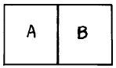
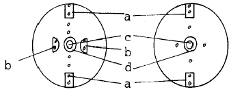

금속도장기능사 (2001-04-29 기출문제)
1과목: 색채
1. 다음 설명 중에서 옳은 것은?
- 색의 밝은 정도를 채도라고 한다.
- 빛의 반사율이 높은 색 일수록 명도가 높다.
- 어떤 색에 흰색을 섞으면 채도가 높아진다.
- 같은 색상 중에서 순색이 채도가 낮다.
(정답률: 알수없음)

2. 다음 중 탄화수소계 용제는?
- 솔벤트 나프타
- 초산에틸
- 메탄올
- 부틸셀로솔브
(정답률: 알수없음)
3. 연두색의 보색은?
- 보라
- 남색
- 자주
- 파랑
(정답률: 알수없음)
4. 다음 퍼티 중에서 살붙임이 가장 좋은 것은?
- 오일 퍼티
- 래커 퍼티
- 폴리에스테르 퍼티
- 아미노 알키드 퍼티
(정답률: 알수없음)
5. 인산염 피막의 특징이 아닌 것은?
- 설비가 간단하며 처리 조건도 쉬우므로 대량생산에 적합하다.
- 약간의 내식성이 있고 내마모성도 있다.
- 물체에 물리적 변화를 주지않고 복잡한 모양의 것도 고르게 피막을 붙일 수 있다.
- 도장하지 않은 채 방치하여도 녹이 슬지 않는다.
(정답률: 알수없음)
6. 밀폐식 부스에서 공기순환 순서가 맞는 것은?
- 필터-예열기-수막-가열기-팬-부스
- 예열기-필터-가열기-수막-팬-부스
- 예열기-수막-필터-가열기-부스
- 필터-수막-예열기-가열기-팬-부스
(정답률: 알수없음)
7. 다음 중 소화법이 아닌 것은?
- 질식소화법
- 냉각소화법
- 산소소화법
- 제거소화법
(정답률: 알수없음)
8. 광원에 따라 물체의 색이 달라져 보이는 것과는 달리, 분광 반사율이 다른 두가지의 색이 어떤 광원 아래에서는 같은 색으로 보이는 경우가 있는데 이것은 다음 어떤 것과 관계가 있는가 ?
- 조건등색(條件等色)
- 간섭색(干涉色)
- 광원색(光源色)
- 조명색(照明色)
(정답률: 알수없음)
9. 유해가스 유기용제의 증기중독 현상과 가장 관련 없는 것은?
- 급성중독의 증상
- 아급성 중독의 증상
- 만성중독의 증상
- 정신착란 증상
(정답률: 알수없음)
10. 노랑글씨를 시인도가 높게 하려면 어느 바탕색으로 하는 것이 효과적인가?
- 빨강
- 보라
- 검정
- 녹색
(정답률: 알수없음)
11. 페인트에 사용되는 안료에는 무기안료와 유기안료가 있는데 다음 중 무기안료는?
- 크로모프탈레드
- 한사 옐로우
- 프탈로시아닌그린
- 티탄 옐로우
(정답률: 알수없음)
12. 도료에 사용되는 첨가제에 대한 설명 중 잘못된 것은?
- 분산제 : 도료를 제조하거나 도장할 때에 기포 발생을 막기 위하여 사용
- 가소제 : 도막에 유연성, 내구성, 노화 방지 등을 목적으로 사용
- 침전 방지제 : 도료 저장 중에 안료가 용기밑으로 침전 되는 것을 방지하기 위하여 사용
- 자외선 흡수제 : 색의 변색을 막기 위하여 사용
(정답률: 알수없음)
13. 하도 도막연마에 사용하는 연마지 종류이다. 연마지 몇번을 사용하면 가장 고른 연마면을 얻을 수 있는가?
- #80∼#120
- #120∼#200
- #200∼#250
- #320∼#400
(정답률: 알수없음)
14. 다음 시험기기 중에서 경도측정에 사용되는 것은?
- 스워드 록커
- 포드컵
- 엘코미터
- 위트 필름 디크니스게이지
(정답률: 알수없음)
15. 퍼티(putty)연마는 마른갈기나 물갈기 어느쪽이라도 최초에는 연마지 몇번을 이용하여 작업하여야 하는가?
- #80∼#150
- #200∼#220
- #240∼#320
- #320∼#400
(정답률: 알수없음)
16. 오렌지 필(Orange Peel) 현상의 원인에 대한 설명이다. 옳지 않은 것은?
- 신너의 증발이 너무 느릴 때
- 건의 거리가 멀 때
- 건의 운행속도가 변동이 심할 때
- 도료의 점도가 높을 때
(정답률: 알수없음)
17. 흰색의 상징은?
- 신성
- 활동
- 애정
- 용기
(정답률: 알수없음)
18. 도장작업 중 기본적인 주의사항이 아닌 것은?
- 속건성 도료의 도장은 햇빛을 이용한 건조가 좋다.
- 저온 다습을 피한다.
- 바탕의 조정에 정성을 들인다.
- 도료의 품질을 조사하고 사용법에 주의한다.
(정답률: 알수없음)
19. 중도(Surfacer) 도료에 대한 설명 중 잘못된 것은?
- 중도는 광택을 증진시키기 위하여 사용한다.
- 하도 도막을 보호하고 상도 도장시 용제의 침투를 막아 도장 결함을 예방한다.
- 중도의 건조 도막 두께는 보통 40~50㎛가 적당하다.
- 중도는 상도의 외관 및 부착력 향상에도 관계가 있다.
(정답률: 100%)
20. 다음 중 연소의 3요소가 아닌 것은?
- 산소
- 착화원
- 가연물
- 소화물
(정답률: 알수없음)
2과목: 금속도장재료
21. 다음은 메탈릭이나 펄 도장시 자주 발생되는 얼룩에 대한 설명이다. 잘못된 것은?
- 도장 조건의 밸런스가 나빠도 얼룩이 생길 수 있다.(공기 압력, 도료의 분사량 등)
- 메탈릭이나 펄 컬러의 얼룩은 베이스의 도막 두께나 프레쉬 타임과는 관계가 없다.
- 스프레이 건의 이상으로 얼룩이 생길 수 있다.
- 부적절한 신너나 도장 작업시 스프레이 테크닉도 얼룩에 영향을 줄 수 있다.
(정답률: 알수없음)
22. 도료의 점도와 가장 관계가 없는 것은?
- 피도물의 형상
- 필요도막 두께
- 도료의 종류
- 피도물의 대소
(정답률: 알수없음)
23. 도장 작업과 직접적인 관계가 없는 것은?
- 저온 다습을 피한다.
- 먼지를 피한다.
- 소음을 피한다.
- 직사 광선을 피한다.
(정답률: 알수없음)
24. 인산염 화성피막의 가공상의 특징과 관계가 없는 것은?
- 처리 조건(온도,시간)을 변경할 수 있다.
- 피도물의 중량이나 치수가 처리후에도 거의 변화가 없다.
- 목적에 따라 피막 두께를 조정할 수 있다.
- 전기 도금에 비하여 가공비가 고가이다.
(정답률: 알수없음)
25. 도장 작업시 수분이나 유분을 여과하려면 어떤장치가 필요한가?
- 교반기 장치
- 콤프레셔 장치
- 파이프관 장치
- 트랜스포머 장치
(정답률: 알수없음)
26. 폴리에스테르 퍼티에 관한 설명 중 잘못된 것은?
- 주제와 경화제가 혼합되어 단시간에 경화된다.
- 경화후 50%가 도막이 된다.
- 1회 도포로 두꺼운 도막으로 조절가능하다.
- 저장 중 피막이 발생할 수 있다.
(정답률: 알수없음)
27. 분체 도장법 중 유동 침적법의 특징이 아닌 것은?
- 전면 도장에 적합하다.
- 도막의 두께가 두껍다.
- 도장 전 예열이 필요치 않다.
- 피도물의 크기가 작은 것이 적당하다.
(정답률: 알수없음)
28. 부분 도장(브렌딩 도장, 보카시 도장)에 대한 설명 중 잘못된 것은?
- 중도를 부분도장 할 때에는 처음에는 좁게 도장하고 그 다음에는 처음보다 도장 범위를 넓혀서 도장하면 나중에 샌딩 작업하기가 편하다.
- 베이스 도료를 부분 도장할 경우에는 처음에는 도장범위를 작게 하고 그 다음 도장시에는 범위를 조금씩 넓혀서 은폐가 될 때까지 작업한다.
- 부분 도장을 할 경우에는 중력식 스프레이 건보다 흡상식 스프레이 건이 더 유용하다.
- 밝은 베이스 컬러는 에어 압력을 조금 낮추어 작업하는 것이 좋다.
(정답률: 알수없음)
29. 알칼리 탈지제가 갖추어야 될 사항이 아닌 것은?
- 탈지 후 부식이 감소할 것
- 침투작용이 있어서 유지분을 재부착시킬 수 있을 것
- 알칼리성이라서 산성의 오물을 중화시킬 것
- 가격면에서 적절해야 할 것
(정답률: 알수없음)
30. 일반 래커도장과 비교하여 호트 스프레이(Hot spray)의 장점에 해당되지 않는 것은?
- 신너의 소비량이 적다.
- 1회로 두꺼운 도막을 얻을 수 있다.
- 공기 소비량이 적다.
- 건조시간이 빠르다.
(정답률: 알수없음)
31. 이액형 도료는?
- 도료 중에 건조제를 넣어 둔 것
- 도료를 사용하기 좋게 용제로서 희석하여 놓은 것
- 불포화 폴리에스테르 수지도료와 같은 도료
- 고형분이 높은 도료
(정답률: 알수없음)
32. 다음 배색 중 가장 따뜻하게 배색한 것은?

- A 녹색, B 노랑
- A 빨강, B 녹색
- A 주황, B 빨강
- A 노랑, B 흰색
(정답률: 알수없음)
33. 분사방식 중 건식 고압법이라고도 하며 건조된 연소재를 고압공기로 분사시키는 방법은?
- 프렘 크리너법
- 파워 블라스트법
- 페이퍼 블라스트법
- 하이드로 블라스트법
(정답률: 알수없음)
34. 도료에 사용하는 용제의 주된 역할은?
- 도막을 형성하는 주요 성분이며 안료를 균일하게 분산 시켜 그 상태를 유지하게 한다.
- 도료에 유연성, 내구력을 주는 목적으로 사용한다.
- 도료 저장 중에 분산된 안료가 응집되는 것을 방지하고 색이 변화되지 않도록 한다.
- 휘발성 물질로 수지를 녹이거나 도료를 적절히 사용할 수 있도록 액상으로 만들어 유동성을 부여해 준다.
(정답률: 알수없음)
35. 다음 중 중도도장의 목적이 아닌 것은?
- 방청을 목적으로 한다.
- 광택저하를 방지한다.
- 내후성을 가지게 한다.
- 도면의 평활성을 부여한다.
(정답률: 알수없음)
36. 인산철계 피막보다 인산 아연계 피막의 장점 중 가장 옳은 것은?
- 철계 피막보다 방식성이 좋다.
- 철계 피막보다 굴곡성이 좋다.
- 철계 피막보다 충격성이 좋다.
- 철계 피막보다 내열성이 좋다.
(정답률: 알수없음)
37. 다음 중 혼합(감산혼합)에 의해 만들 수 없는 색은?
- 파랑
- 주황
- 보라
- 회색
(정답률: 알수없음)
38. 바둑판 목 시험법은 도막의 어떤 특성을 알아보기 위한 것인가?
- 부착성
- 굴곡성
- 연마성
- 내수성
(정답률: 알수없음)
39. 알루미늄제의 원통에 작은 구멍을 많이 뚫어 그 주위를 펠트(felt)로 감은 도장 용구는?
- 정전 도장의 용구
- 주걱칠의 용구
- 롤러도장의 용구
- 디핑도장의 용구
(정답률: 알수없음)
40. 다음 그림은 압송식 스프레이건의 캡구조이다. 그림에서 도료의 미립화를 완전하게 하는 것은?

- a
- b
- c
- d
(정답률: 알수없음)
3과목: 금속도장
41. 다음 중 열가소성 수지가 아닌 것은?
- 염화비닐 수지
- 아크릴 수지
- 멜라민 수지
- 스티렌 수지
(정답률: 알수없음)
42. 알칼리 세척제로서 구비하여야 할 조건이다. 올바르지 않은 것은?
- 유지의 용해력이 있어야 한다.
- pH 9 이상의 용액이어야 한다.
- 표면장력이 높아야 한다.
- 화학약품 및 열에 안전해야 한다.
(정답률: 알수없음)
43. 수연 작업시 사용한 물(수분)을 완전히 제거하지 않고 도장했을 때 주로 발생되는 불량은?
- 크래킹(cracking)
- 핀홀(pinhole)
- 블리스터(blister)
- 옐로우잉(yellowing)
(정답률: 알수없음)
44. 도료 건조시 대류건조와 비교하여 적외선 가열의 설명이 잘못된 것은?
- 조작이 복잡하다.
- 가열로의 조립이 간편하다.
- 열효율이 좋다.
- 온도상승이 빠르다.
(정답률: 알수없음)
45. 붓도장에 있어서의 붓의 종류에 대한 설명 중 틀린 것은?
- 페인트붓은 탄력성이 강한 것이 좋다.
- 니스붓은 페인트붓보다 탄력성이 약한 것이 좋다.
- 어떤 붓이건 붓끝이 침상(針牀)인 것은 좋지 않다.
- 셀락붓의 털은 부드러운 것이 좋다.
(정답률: 알수없음)
46. 다음 신너 중 제1석유류에 해당하는 것은?
- 우레탄 신너
- 리타더 신너
- 래커계 신너
- 석유계 신너
(정답률: 알수없음)
47. 배색이 잘 안될 때에 취할 사항과 가장 거리가 먼 것은?
- 같은 크기로 배색한다.
- 대조되는 색을 놓아 본다.
- 배치를 바꾸어 본다.
- 색상을 바꾼다.
(정답률: 알수없음)
48. 에멀션(emulsion)도료의 특징이 아닌 것은?
- 건조가 빠르다.
- 건조 후는 내수세성이 된다.
- 냄새가 없고 위생적이다.
- 소량의 용제를 포함하고 있어 두꺼운 도막을 얻을 수 있다.
(정답률: 알수없음)
49. 선저2호 도료란?
- 방청도료이다.
- 방오도료이다.
- 수선도료이다.
- 내염수성 도료이다.
(정답률: 알수없음)
50. 계기의 지침 눈금에 사용하는 도료는?
- 에나멜 도료
- 금속 도료
- 산포용 둥근입자 도료
- 발광 도료
(정답률: 알수없음)
51. 유성도료에 대한 설명 중 틀린 것은?
- 유성도료는 건축물, 선박, 차량, 교량 등에 많이 사용된다.
- 비교적 살붙임이 좋기 때문에 상도를 2회정도로 마무리 한다.
- 덧칠을 할 경우에는 2∼4시간 정도 건조시킨 다음에 덧칠을 하여야만 주름이 생기지 않는다.
- 건조를 촉진시키기 위해서는 망간비누계, 코발트비누계 등의 건조제를 2∼3% 혼합시킨다.
(정답률: 알수없음)
52. 다음 중 도장 공정별 분류가 아닌 것은?
- 프라이머(primer)
- 서페이스(surface)
- 해머톤(hammaton)
- 상도(top coating)
(정답률: 알수없음)
53. 중성색계에 속하는 색은?
- 연두,보라
- 녹색,노랑
- 빨강,주황
- 청록,파랑
(정답률: 알수없음)
54. 탱크 내에서의 도장 작업시 유의 사항으로 잘못 설명된 것은?
- 도료 및 신너가 피부에 닿을 우려가 있을 때에는 보호복을 착용해야 한다.
- 작업 중에는 용제 등의 증기농도를 측정하여 환기의적정성을 조사한다.
- 작업은 단독으로 하는 것이 안전성에 있어서 유리하다.
- 용제 등의 증기농도가 높아질 우려가 생기면 호스마스크를 착용하여 작업한다.
(정답률: 알수없음)
55. 색의 대비에 관한 설명 중 옳은 것은?
- 무채색과 유채색의 동시대비는 명도대비, 채도대비, 보색대비 등이 있다.
- 색상대비는 색상이 다른 두색이 서로의 영향으로 색상차가 훨씬 줄어드는 현상이다.
- 유채색 끼리의 대비(동시대비)는 색상대비와 채도 대비만 있고 명도대비는 일어나지 않는다.
- 면적대비에서 일시적인 목적이외에는 넓은 면적에는 채도가 높은 색으로 하는 것이 좋다.
(정답률: 알수없음)
56. 유성 에나멜(에나멜 페인트)의 특성이 아닌 것은?
- 오일 니스와 같이 천연수지를 함유하므로 광택이 좋다.
- 유성 페인트 보다 건조가 빠르다.
- 붓자국이나 점착성이 적다.
- 내수성, 내유성, 굴곡성이 좋다.
(정답률: 알수없음)
57. 색의 혼합에서 혼합할수록 명도가 높아지는 혼합은?
- 가산 혼합
- 감산 혼합
- 병치 혼합
- 회전 혼합
(정답률: 알수없음)
58. 도장되는 표면에 있는 구멍, 균열, 깊이 파인 부분을 메우기 위해 사용하는 것은?
- 서페이서
- 프라이머
- 퍼티
- 언더코트
(정답률: 알수없음)
59. 유성페인트에 대한 설명 중 틀린 것은?
- 보일류와 안료를 혼합하여 만든 도료이다.
- 도막 탄성이 풍부하다.
- 건축물, 차량, 선박 등에 사용된다.
- 다른 페인트에 비해서 가격이 비싸다.
(정답률: 알수없음)
60. 색상환에서 가장 먼 색과의 관계를 말하는 것은?
- 표색
- 보색
- 순색
- 혼색
(정답률: 알수없음)